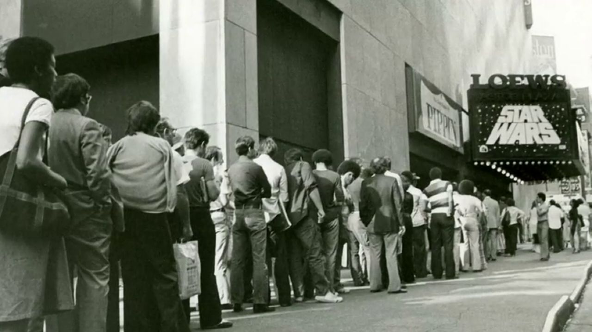

La guerra de las galaxias
Star Wars, conocida también en español como La guerra de las galaxias,678 es una franquicia compuesta primordialmente de una serie de películas concebidas por el cineasta estadounidense George Lucas en la década de 1970, y producidas y distribuidas por The Walt Disney Company a partir de 2012. Su trama describe las vivencias de un grupo de personajes que habitan en una galaxia ficticia e interactúan con elementos como «la Fuerza», un campo de energía metafísico y omnipresente9 que posee un «lado luminoso» impulsado por la sabiduría, la nobleza y la justicia y utilizado por Jedi, y un «lado oscuro» usado por los Sith y provocado por la ira, el miedo y el odio A pesar de que la mayoría de la gente considera a Star Wars como ciencia ficción, George Lucas ha declarado en numerosas ocasiones que estas películas no son de "ciencia ficción", principalmente porque la tecnología que muestra no tiene base científica. Así, serían de "aventura épica" y nada más. Según el propio George Lucas, su primera intención fue la de hacer una película de Flash Gordon, como homenaje a los viejos seriales de ciencia ficción de los años 1930, pero Dino De Laurentiis ya había adquirido los derechos para hacerla, por lo que tuvo que crear sus propios personajes, e incorporar otras influencias (Kurosawa, Campbell). A pesar de estos cambios, en la primera trilogía aún aparecen conceptos tan característicos del serial original de Flash Gordon como el rubio héroe espacial que lucha junto con los rebeldes contra las muy superiores fuerzas de un tiránico imperio, escenarios como la ciudad en las nubes, los cambios de escena animados, o el hecho de empezar cada entrega con un texto resumen del capítulo anterior desplazándose hacia las estrellas.Origen
Star Wars empezó en 1977, con el estreno de la primera entrega, con el título en castellano de La Guerra de las Galaxias (Star Wars, en inglés). A pesar de los problemas que tuvo Lucas para financiar la película, y de que apenas se esperaba recuperar la inversión realizada, fue un tremendo éxito, especialmente si se suman las ventas de artículos relacionados. Tres años después aparece su segunda parte (El Imperio Contraataca) y, finalmente, la tercera parte (El Regreso del Jedi), que en aquel momento George Lucas consideró como el último filme que haría de la saga. Con el fin de distinguir entre la serie completa y la primera película rodada, se aprovechó el primer reestreno de La Guerra de las Galaxias, en 1981, para agregar el letrero "Episodio IV: Una Nueva Esperanza" al principio del texto introductorio del principio, sirviendo este nuevo título a partir de entonces para identificarla. Así, se pasó a considerar como el cuarto capítulo de una serie a la que faltaban aún los tres primeros capítulos. Lucas se aseguró desde el principio de que hubiera comics, novelas e innumerables artículos relacionados con este tema, inicialmente para compensar un posible fracaso económico de la primera película, y luego para rentabilizar aún más la saga y satisfacer la demanda. Todavía se sigue produciendo toda clase de material de este tipo. Lucas hizo declaraciones contradictorias durante años sobre qué planes tenía para la saga, llegando a anunciar poco después del estreno de El Retorno del Jedi el comienzo del rodaje de un Episodio VII, luego desmentido. También se habló de rodar "las aventuras del joven Obi Wan Kenobi". Finalmente, en 1997, George Lucas reedita los tres filmes mejorando su calidad visual y sonora, restaurando algunas escenas antes suprimidas y sustituyendo muchos de los efectos especiales originales por animación computarizada. A pesar de los rumores de que se cambió el nombre de "La Guerra de las Galaxias" del Episodio I al IV en esta reedición de 1997, la cuarta entrega se rotuló como "Episodio IV" ya en 1981, no habiendo llevado ninguna película el rótulo de "Episodio I" antes de La Amenaza Fantasma